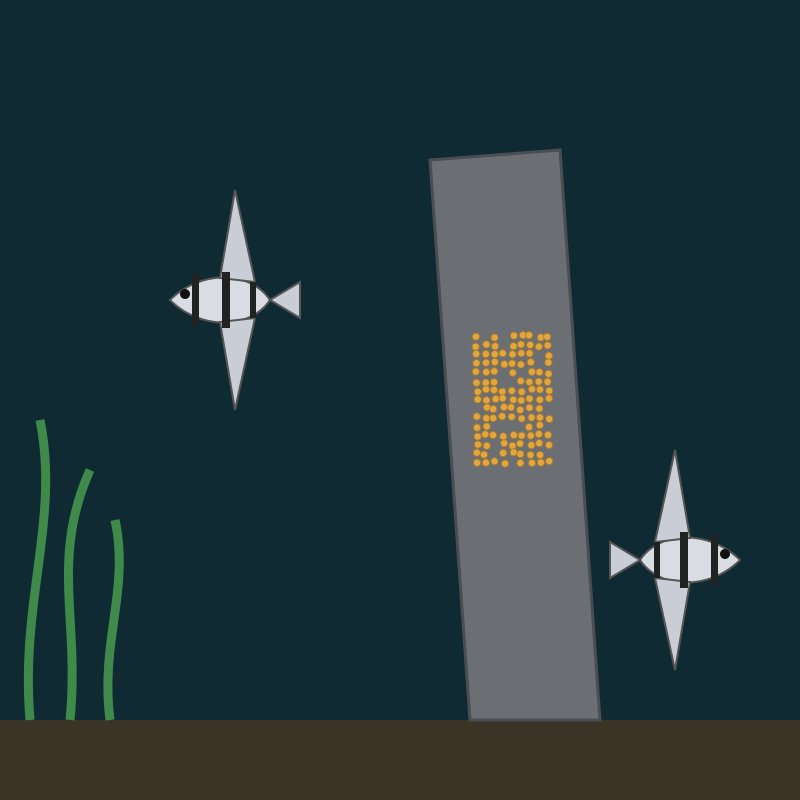
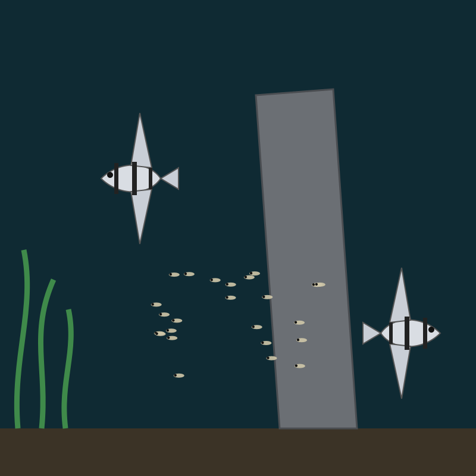

Can Jev watch my fish eggs?
“How can I use Jev to alert me when my fish eggs hatch? I’ve got a breeding tank with angelfish eggs and they usually hatch in 2 to 3 days but I keep missing it. Ideally it would ping my phone.”
Short answer: Jev can’t watch a tank or send alerts: it answers one typed question at a time about text or a picture you give it. For a hatch alert on its own, set a phone reminder at day 2 and day 3 from laying, or use a camera with motion alerts.
What Jev can do with one snapshot of the tank
Jev does not see video and does not message you. Give it one photo and it answers typed questions about that photo: yes or no, one of a few choices, a level on a scale, or where something is. We drew two snapshots of a breeding tank, one with eggs on the slate and one after hatching, and asked Jev the same five questions about each.


Jev’s answers, next to what is in the picture
| Question | Type | Day 1 (eggs) | Day 3 (hatched) |
|---|---|---|---|
| Are there free-swimming fry? | yes / no | no, 8% yes | yes, 96% |
| Is there an egg cluster on the slate? | yes / no | yes, 67% | no, 6% yes |
| How many fry? (none, 1 to 10, 11 to 30, over 30) | score | split: none 58%, over 30 37% | 11 to 30, 97% (24 drawn) |
| How many adult angelfish? | choice | two, 92% | two, 100% |
| Where is the egg cluster? | box | edges within 0.02 of ours | a box anyway, confidence 0.49 |
Two answers miss, and both teach something. On day 1 Jev was split between “no fry” and “over 30”: a dense cluster of eggs looks a lot like a crowd of tiny fish, and its confidence on that question was 0. On day 3 there were no eggs left, but a box question always returns a box; the low confidence and the “no egg cluster” answer beside it are what tell you to ignore it.
Turning that into a hatch alert
The alert is a small loop you or your agent would build. Jev makes one decision inside it; something else takes the photo and sends the ping.
- A cheap camera over the tank saves a snapshot every 30 minutes.
- Each snapshot goes to Jev with one yes/no question: “Are there free-swimming fry?”
- When the answer passes a threshold you pick (say 80% yes on two snapshots in a row), your script sends the phone notification.
That is the kind of decision Jev is for: the same narrow question, asked many times, where each answer is cheap and typed. Whether Jev beats a simpler rule for your tank (a motion detector, a colour check on the slate) or a general LLM is what Jev!Jev measures: label around 30 real snapshots yourself, run all three on them, and compare cost per correct answer. With fewer than 30 labelled snapshots the honest verdict is “not enough evidence yet”.
What this run does not show
- The tanks are drawings with known counts, not photos. A real tank has glass glare, plants and moving fish, and none of that was tested.
- One request per picture, run once, so there is no measure of how often the answers change between runs.
- Box needs the Jev preview model,
jev-1.14.0. Each request used 2,219 input tokens; the preview’s price is not published on the price table we use, so no cost is stated here. - Jev!Jev did not run its three-way comparison here. This page shows what a single Jev answer looks like, not a verdict.